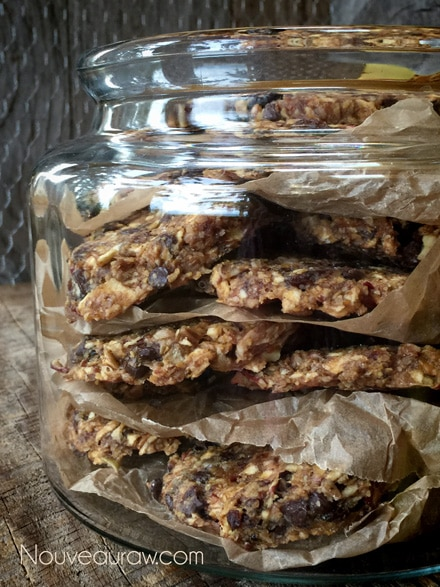
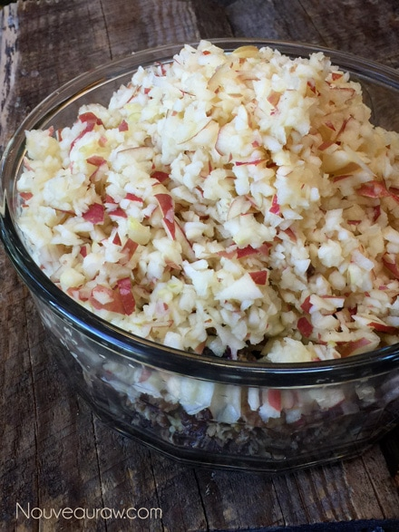
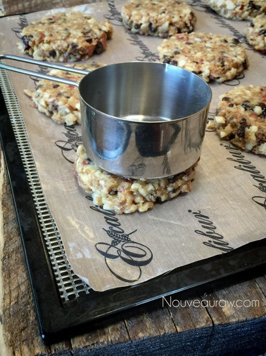
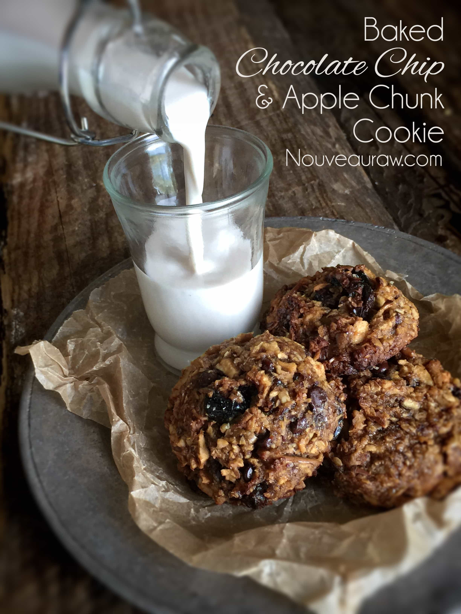
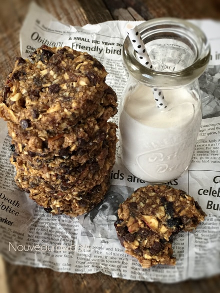

Chocolate Chip and Apple Chunk Cookie

~ raw, vegan, gluten-free ~
The Chocolate Chip and Apple Chunk Cookie happened by accident. We are up in Flagstaff working on the rebuild of one of our stores, and I decided to make some raw treats for all the workers.
Raw Apple Pie… umm, sounded like a great thing to make around the holiday season. I also made Raw Pumpkin Spice Pie, prepared in small single plastic cups so they could be eaten with ease. I ended up running out of cups, which left me with some extra raw apple pie batter. So I decided to try making a cookie out of it.
Thus, this cookie was born. I just started grabbing various ingredients that we had accumulated in the pantry. I had no idea how this was going to turn out, but much to my surprise, this became the MOST AMAZING COOKIE EVER! According to all the guys who ate them and ate them.
Great! I didn’t measure a darn thing. I just dumped everything in like a mad chemist. I should have learned by now always to measure things, just in case, it becomes one of those MOST AMAZING COOKIES EVER! My husband wanted more, the guys wanted more, so I quickly started to rack my brain, trying to visualize everything I had used. So here we go…
April 22, 2015 (orig. post 11/28/10) – I made these cookies today for Bob, so I thought I would clean up this posting since it was so old. The recipe remains the same (delish!) I just added some new photos and gave instructions on how to bake them for all my readers who don’t own a dehydrator… yet. :) The baked cookies had a crunchy outside and chewy inside. The dehydrated cookie was chewy all the way through — both delicious, just different textures.
Yields 30 (1/4 cup ) cookies
- 6 apples, organic – divided
- 1/2 cup Medjool dates
- 1 1/4 cups raisins – divided
- 1/4 cup maple syrup
- 1 cup ground flaxseed
- 2 tsp ground cinnamon
- 1/2 tsp Himalayan pink salt
- 1 cup raw pecans, soaked & dehydrated
- 3/4 cup raw walnuts, soaked & dehydrated
- 1 cup coconut flakes, unsweetened
- 1/2 cup cranberries
- 3/4 cup chocolate chips
Preparation:
- In the food processor, fitted with the “S” blade, combine until well blended; 2 apples, dates, 1/4 cup raisins, and maple syrup. Process until it resembles a chunky apple sauce.
- If using organic apples, you can leave the peel on the apples, otherwise, remove the skin.
- If the dates and raisins are really dry, rehydrate them in enough hot water to cover them. Let them sit for 15 minutes. Really dry raisins can get stuck on the “S” blade and bind things up. Been there and got the T-shirt.
- Once done soaking, drain the soak water and hand-squeeze out any excess water.
- Add the ground flax, cinnamon, and salt. Pulse together, making sure the ground flax is well incorporated. Transfer to a large bowl.
- Back in the food processor bowl, pulse the pecans, walnuts, remaining raisins, and cranberries together — place in the large bowl with the other ingredients.
- Don’t over-process; the rough chop from the food processor adds a nice crunch and texture to the cookie.
- In your food processor (last time, I promise) pulse the remaining 4 apples. Add to the other ingredients, as well as the chocolate chips and coconut flakes… mix well.
- Don’t blend to a mush; you want nice pieces again for great texture in your cookie.
- I recommend using your hands when mixing this batter. Get in touch with your food! Literally.
- Let the cookie batter rest for about 15 minutes. The apples will have a little juice, and the flax will soak it up. Use this is a great time to get caught up on the dishes.
- If you accidentally over process the apples, just let the mixture sit a bit longer so the flax can really get busy and do its magic.

Dehydrator Method:
- Line the dehydrator tray with a non-stick teflex sheet.
- Using a 1/4 cup cookie scoop, scoop out dough onto the tray.
- Press each cookie in a flat circular cookie.
- Dehydrate at 145 degrees (F) for 1 hour, remove the cookies from the teflex sheet and place them straight on the mesh sheet.
- Continue to dry at 115 degrees (F) for roughly 16 hrs. It depends on how dry you want them.
- Store in an airtight container in the fridge to extend the shelf life.
Oven Method:
- Preheat the oven to 350 degrees (F).
- Line a cookie sheet with parchment paper.
- Using a 1/4 cup cookie scoop, scoop out dough onto the tray.
- Press each cookie in a flat circular cookie or leave it in a mound.
- Bake for 80 minutes.
- Once done baking, place on a wire rack to cool.
- Store in an airtight container in the fridge to extend the shelf life.
Culinary Explanations:
- Why do I start the dehydrator at 145 degrees (F)? Click (here) to learn the reason behind this.
- When working with fresh ingredients, it is essential to taste test as you build a recipe. Learn why (here).
- Don’t own a dehydrator? Learn how to use your oven (here). I do, however honestly believe that it is a worthwhile investment. Click (here) to learn what I use.
Errr, I wasn’t kidding, use a large bowl. hehe

Here I am flattening the cookies with the base of a measuring cup.

For Nouveau Raw followers who don’t use a dehydrator…
these cookies can still be made and baked!

These are the dehydrated cookies.

© AmieSue.com